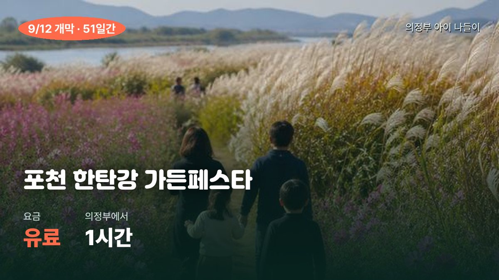

오전 갱신 · 어제 카드를 그대로 승계했습니다(민락맥주축제는 어제로 끝나 뺐습니다) · ‼️오늘 하루에 마지막인 것이 셋입니다 — 양주 국가유산야행 1막 마지막 날, 서울라이트 DDP 오늘이 마지막, 동두천 락 페스티벌 오늘까지 · 차 없는 잠수교는 오늘 14시 2회차 · 날씨·주간 일정 재계산 · 🚗 이동시간은 의정부 출발 자가용 기준
🌤 오늘(일) 16~23℃ · 강수량 0.1mm · 강수확률 14% — 아침 6시 16℃ · 9시 18℃ · 낮 12시 22℃ · 오후 3시 23℃ · 저녁 6시 22℃ · 밤 9시 19℃입니다. ‼️어제보다 낮 최고가 3도 낮습니다(26℃→23℃). 오늘 저녁 야외가 셋(양주 야행·잠수교·DDP)이라 밤 19℃에 맞춰 겉옷을 하나씩 챙기세요 — 특히 한강(잠수교)은 강바람이 있어 체감이 2~3도 더 낮습니다. 강수확률 14%는 아침 9시 언저리에 잠깐 스치는 수준이라 오후·저녁 야외 일정에는 영향이 없습니다. 우산은 차에만 넣어 두시면 됩니다. ☀️ 내일(월) 16~26℃ · 강수량 0mm · 강수확률 2% — 내일이 오히려 오늘보다 3도 따뜻하고 비도 없습니다. ‼️다만 월요일은 박물관·과학관이 대부분 휴관이라 실내는 막힙니다 — 내일 반나절이 나신다면 야외(나리농원·한탄강 지질공원) 쪽으로 잡으세요.
📌 지금 챙길 것 — 오늘 저녁 하나만 고르시면 됩니다. 마지막 날이 셋이라 다 갈 수는 없습니다. ✅ 일요일이라 휴관인 곳은 없습니다 — 경기북부어린이박물관 · 노원 JUMP · 서울시립과학관 · 서울로봇인공지능과학관 · 실학박물관 · 전곡선사박물관 · 국립과천과학관 · 동두천 놀자숲 모두 정상 운영합니다. ‼️내일(월)은 이 시설들이 전부 휴관입니다. 🏯 ‼️1순위 — 양주 국가유산야행 1막, 오늘이 마지막 날 · 오늘 9/13(일) 16:30~22:00 · 양주관아지 · 🚗20분 · 무료. 이번 달 목록에서 가장 가깝고 가장 쌉니다. 16:30 시작이라 저녁 먹고 6시에 나가도 네 시간이 남습니다. 놓치셔도 2막이 다음 주말(9/19~20 17:00~22:00)에 한 번 더 있습니다 — 오늘 무리하지 않으셔도 되는 유일한 건입니다. 💡 ‼️오늘로 끝나는 것 — 서울라이트 DDP(🚗40분·무료·해 진 뒤 19시 이후). 2막도 다음 회차도 없습니다. 건물 외벽 전체가 미디어아트로 바뀌는 행사라 7세도 그냥 서서 보기만 하면 됩니다. 🌉 오늘 오후 — 차 없는 잠수교 2회차(오늘 14:00~22:00·무료·🚗45분). DDP와 묶으면 오늘 하루가 그대로 채워집니다 — 오후 2시 잠수교 → 저녁 식사 → 7시 DDP. 둘 다 한강·동대문 라인이라 이동이 짧습니다. ‼️잠수교는 10/25까지 일곱 번 더 있지만 DDP는 오늘이 마지막이라, 하나만 고르신다면 DDP입니다. 🎸 동두천 락 페스티벌도 오늘까지입니다 — 신천교 하부광장 · 무료 · 🚗25분. 📚 양주 미니 북 페스티벌도 오늘 옥정호수도서관에서 열립니다(🚗25분·무료) — 야행 가시는 길에 낮에 들르기 좋습니다. 📅 다음 주 토요일 미리 표시 — 동두천시 진로체험박람회(9/19(토) 12:30~16:30 · 무료 · 사전신청 없음 · 🚗25분). AI·코딩·드론·VR·파일럿·바리스타 등 67개 부스라 11세에게 올가을 가장 잘 맞는 하루입니다. 같은 날 밤에 양주 야행 2막이 있어 낮 동두천 → 밤 양주로 이을 수 있습니다. 🌼 어제 문 연 둘은 다음 주부터가 편합니다 — 자라섬 꽃 페스타(가평·🚗1시간10분·~10/5)와 포천 한탄강 가든페스타(🚗1시간·~11/1). 개막 첫 주말이라 오늘도 붐빕니다. 💦 무료 물놀이장·워터파크 야외존은 8/30~9/6으로 전부 종료됐습니다. 9월 물놀이는 실내(아쿠아필드·캐리비안베이)만 남았습니다.
조선시대 백성 체험 — 아이가 옷을 입고 「양주목 사람들」이 되어 관아 안을 돌아다닙니다. 7세가 제일 좋아하는 형태입니다
양주별산대놀이(국가무형유산 제2호) 야외 공연 — 탈을 쓴 사람들이 춤추고 재담하는 마당극이라 대사를 못 알아들어도 아이가 계속 봅니다
「양주목 퀴즈」·「역사 속으로」·「양주목 학당」 참여 프로그램 — 11세는 이쪽이 맞습니다. 조선시대 지방 관아 구조를 교과서가 아니라 발로 배웁니다
밤에 조명을 켠 관아지·청련사를 걷습니다 — 「야행」이라 낮에 보던 유적과 완전히 다르게 보입니다
양주소놀이굿·양주상여와회다지소리·청련사 생전예수재·양주들노래·최영장군당굿 등 양주에만 있는 무형유산 공연이 이어집니다
🆕 손으로 하는 체험 — 나전칠기 만들기 · 전통놀이 · 왕실문화 체험이 가족 단위로 운영됩니다(양주시 공식 발표 확인). 7세는 나전칠기·전통놀이, 11세는 왕실문화 쪽이 맞습니다
일정
‼️1막·2막 네 날짜가 모두 토·일입니다(금·토 아님 — 9/10 공식 확인). 1막 9/12(토)~9/13(일) 16:30~22:00 — 오늘이 1막 마지막 · 2막 9/19(토)~9/20(일) 17:00~22:00 — 네 날짜가 모두 토요일 아니면 일요일입니다 · 모두 4일 · 해 지기 전에 도착하면 낮 관아지 → 밤 야행을 이어서 볼 수 있습니다
👧 연령 적합
7세 ✅ (체험·공연 위주라 걷는 거리 부담 적음) · 11세 ✅ (참여 프로그램·역사 학습) · 키 제한 없음
왜 좋은가
이번 달 목록에서 가장 가깝고(🚗20분) 가장 쌉니다(무료). 왕복 40분이라 저녁 먹고 나가도 되는 유일한 축제입니다. ‼️16:30 시작이라 저녁 먹고 6~7시에 가도 네 시간이 남습니다 — 낮에 다른 데를 다녀와도 그날 밤에 갈 수 있습니다
참고
주제는 「다시, 관민동락」 — 조선시대 양주목에서 관리와 백성이 함께 어울렸다는 뜻입니다. 부대 프로그램 = 관민이여 밤을 밝혀라 · 신명나게 놀아보세 · 관민동락의 풍류를 즐기다 · 양주목 사람들 · 양주목의 시간을 거닐다. 올해는 시티투어 연계도 운영됩니다
부스가 67개입니다 — 하루에 아이가 직접 손으로 해 보는 직업을 열 개 넘게 돌 수 있습니다. 키자니아를 하루짜리 무료로 옮겨 놓은 형태라고 보시면 됩니다
미래산업 쪽 — 로봇엔지니어 · AI 전문가 · 코딩 전문가 · VR 전문가 · 파일럿 · 드론 조종사. 11세가 가장 오래 붙잡힐 구역입니다
손으로 만드는 쪽 — 파티시에 · 바리스타 · 애니메이터. 7세는 이쪽부터 시작하는 편이 좋습니다
몸으로 하는 쪽 — 스마트 양궁 · 드론 축구 · 진로 타로. 줄이 길어지기 쉬우니 도착하자마자 여기부터 잡으세요
진로멘토링·진학상담 부스가 따로 있습니다 — 11세는 「무슨 일을 하는 사람인지 물어보기」만 해도 소득이 있습니다
일정
9/19(토) 12:30 ~ 16:30 · 하루 4시간뿐입니다 · 장소 동두천시민회관
👧 연령 적합
11세 ✅ (AI·코딩·드론·진로상담이 정확히 이 나이대) · 7세 △ (체험 부스는 되지만 진로상담·멘토링은 이해가 어렵습니다 — 파티시에·바리스타·양궁 위주로 도세요) · 키 제한 없음
요금
무료 · ‼️별도 사전 신청 없이 현장에서 자유롭게 참여합니다 — 예약 화면을 찾지 않아도 됩니다
‼️확인이 필요한 것
보도자료에 대상이 「관내(동두천) 어린이·청소년」으로 적혀 있습니다. 사전신청 없이 현장 참여라 타 지역 아이도 대개 가능하지만, 확정된 안내는 아닙니다 — 가시기 전에 동두천시 진로체험지원센터에 전화로 한 번 확인하세요. 확인되면 다음 브리핑에 반영하겠습니다
왜 좋은가
올가을 목록에서 11세에게 가장 잘 맞는 하루입니다. 같은 내용을 키자니아에서 하면 6만원대(🚗1시간)인데 여기는 무료에 🚗25분입니다. ‼️같은 날 양주 국가유산야행 2막(9/19 17:00~22:00·🚗20분)이 열립니다 — 낮에 박람회(12:30~16:30) → 저녁에 야주 야행(17:00~)으로 하루에 두 개를 이어 붙일 수 있습니다. 두 곳 다 무료이고 차로 15분 거리입니다
참고
주제가 「AI와 미래직업」이라 부스 구성이 해마다 달라집니다 — 세부 부스 목록은 행사 직전 동두천시 공지에 올라옵니다. 시민회관 주차가 넉넉하지 않으니 12시 전에 도착하시는 편이 좋습니다
‼️소요산 물놀이장은 8/30로 올해 운영 종료 — 「실내 전시 → 연결통로 → 야외 물놀이」 코스는 내년 여름에 다시 열립니다
운영
10~18시 · 1일 4회 회차제(10·12·14·16시) · 입장마감 17시 · ✅월요일만 휴관이라 오늘(토)은 정상 운영합니다(휴관은 매주 월요일). ‼️소요산 물놀이장은 8/30로 올해 운영을 마쳤습니다 — 이제 박물관 단독 카드입니다. 차로 35분이라 오늘 오후 회차(14시·16시)도 충분히 닿습니다
새 상설전 '밥상 위의 문화유산' — 옛날 밥상 차리기, 그릇 만져보기 등 손으로 하는 전시
'새롭게 관찰해요' 코너에서 유물을 확대경으로 뜯어보기
본관 특별전 '우리들의 밥상'(~10/25)과 주제가 이어져 7세는 어린이관, 11세는 본관까지
극장 용 가족공연 '할머니의 여름휴가: 씨씨상점' — ‼️8/30로 종료
규모가 커서 하루 종일 버틸 수 있다 — 휴관이 거의 없어 비 오는 날의 기본 카드
운영
09:30~17:20 · ✅오늘도 정상 개관 — 연중 휴관이 거의 없는 무료 실내입니다. 어린이박물관 회차 예약은 14일 전 00시 오픈이라 당일은 취소표를 노려야 하고, 본관 상설전시는 예약 없이 자유관람입니다. 다음 「문화가 있는 날」 야간개관(18~21시)은 9/30(수)
한강 수영장·물놀이장 6곳 (45~60분) 8/30로 올해 운영을 마쳤습니다 — 뚝섬 유수풀·잠실 인피니티월·광나루 자연형 물놀이장(2026 신규)은 내년 여름에 다시 엽니다. 한강공원 자체는 연중 무료 개방이라 9/4(금) 이후 맑은 날 산책·자전거로는 그대로 쓸 수 있습니다
국립항공박물관(강서, 1시간10분)✅오늘(토) 정상 개관(매주 월 휴관) · 입장 무료 · 매일 8회 무료 항공탐구교육(풍선헬리콥터 만들기 등) · 유료 체험은 7세 '어린이공항' 역할놀이, 11세 '조종관제'·기내훈련·VR패러글라이딩 — 전관 실내라 날씨와 무관합니다
국립어린이청소년도서관(1시간20분) 실감형 동화구연 토요일 회차는 8/22로 끝났습니다 · 다음 회차는 도서관 공지 확인 — 열람실·어린이자료실은 휴관일 없이 무료 개방합니다
서울어린이대공원(광진, 1시간)물놀이장(8/20)과 '물결정원'(8/23)은 끝났습니다. 남은 것은 동물원·놀이터 — 연중무휴 무료. 연중무휴 무료라 오늘도 그대로 쓸 수 있습니다 — 다만 낮 28℃라 늦은 오후가 낫고, 선선해지는 이번 주 후반이 제일 좋습니다
국립민속박물관 (1시간, 수요일 정상 개관) 《가나다락—글놀이 말놀이》는 8/30로 종료됐습니다. 상설전시는 무료로 계속 열리며 어린이박물관은 회차 예약제입니다
문화가 있는 날 — 다음은 9/30(수) 국립박물관·미술관·궁·휴양림 무료·야간 연장 · 영화 성인 1만원 혜택은 매달 마지막 수요일에만 열립니다. 9월 30일을 달력에 미리 적어 두세요
흐리면 실제 관측이 어려우니 출발 전 당일 하늘을 보고 결정할 것 (환불 규정 확인 필수)
운영
✅오늘(토)은 정상 운영합니다 · 이번 주말까지 비 예보가 사실상 없어올가을 첫 관측 적기입니다(특히 기온이 떨어지는 9/10~9/11 밤) — 여름 별빛패키지는 8/29 회차로 끝났으니 가을 회차 일정을 홈페이지에서 확인하세요
일정
토요일만 운영 · ‼️여름 별빛패키지는 8/29(토) 회차로 끝났습니다 · 13~19시 발권. ⏳9월 이후 회차는 아직 공식 확인이 안 됐습니다 — 가시려면 먼저 전화(031-894-6000)로 회차를 확인하세요. 낮 시간 천문대 전시·플라네타리움 관람은 계속 가능합니다
아침고요수목원(가평, 1시간10분) 여름피크닉 ~8/30 · 주말 무료 플레이존 · 11,000/7,500 · 08:30~19:00 / 포천 허브아일랜드 2026 신규 놀이동산 + 야간 불빛동화축제 12,000/10,000(수 휴무)
포천 어메이징파크(50분)서스펜션브릿지(출렁다리)·짚라인·과학관·솔라시스템 + 여름 야외수영장 · 입장 8,000·과학관 패키지 13,000 · 2026 8월 세부 미확인 — 전화 확인
🎪 날짜 있는 행사 — 임박순. 물놀이 시즌이 어제로 끝나고 가을 축제로 넘어갔습니다. 아래는 9월 안에 날짜가 박혀 있는 것만 모았습니다(10월 이후는 🔜 예정 섹션)
‼️~9/13(일) · 서울라이트 DDP 가을 (동대문·🚗40분) 무료 — 해 진 뒤 DDP 외벽 전체가 화면이 되는 미디어아트. 이번 주말이 마지막입니다 · 위 🆓 무료 섹션에 카드가 있습니다
‼️9/12(토)·13(일), 19(토)·20(일) · 양주 국가유산야행 (양주관아지·🚗20분) 무료 — 조선시대 백성 체험·양주별산대놀이·양주목 학당. 이번 달 목록에서 가장 가깝고 가장 쌉니다 · 위 🆓 무료 섹션에 카드가 있습니다
매주 일요일 ~10/25 · 차 없는 잠수교 뚜벅뚜벅축제 (🚗45분) 무료 — ‼️일요일 14:00~22:00만 운영합니다(토요일에 가시면 헛걸음). 다음 회차 9/13 · 9/20 가을운동회 회차가 두 아이 모두에게 가장 맞습니다 · 위 🆓 무료 섹션에 카드가 있습니다
9/10(목)~15(화) · 서울국제어린이영화제 — 회차·상영관은 공식 홈페이지 확인
9/11(금)~12(토) · 의정부 민락맥주축제 (민락동·🚗10분) — 어제로 끝났습니다. 내년 9월에 같은 시기로 다시 열립니다
9/11(금)~13(일) · 제26회 동두천 락 페스티벌 (신천교 하부광장·🚗25분) 무료 — 야외 공연장이라 돗자리를 펴고 앉아 볼 수 있습니다
‼️~9/12(토) · 노원 상계예술마당 방탈출 체험 마감 — 예약하실 거면 이번 주 안입니다
9/24(목)~10/4(일) · 창경궁 야연 (🚗50분) — 궁궐 야간 개장 + 공연 · 일부 프로그램 무료
🔜 예정 행사 — 9~10월
무료 물놀이장이 8/31로 전부 끝나면서 이제부터는 가을 축제 시즌입니다. 관광공사 축제 DB에서 의정부 90km 이내로 추린 41건 + 의정부시 연간 행사표에서 골랐고, 아이가 직접 할 게 있는 것을 카드로 올렸습니다 · 날짜순 · ‼️9/6 개막한 「차 없는 잠수교」는 위 🆓 무료 섹션에 있습니다(다음 회차 9/13 일) — 매주 일요일 14~22시 운영이 맞습니다(토·일 아님)

유료7세 ✅ 11세 ✅51일간 열림
포천 한탄강 가든페스타
포천 관인면 창동로 832 (한탄강 하늘다리·비둘기낭 권역) · 의정부에서 🚗1시간
▸ 뭘 할 수 있나
한탄강 주상절리 위에 조성한 대형 정원을 걷습니다 — 넓어서 아이가 뛰어다닐 수 있습니다
같은 권역에 한탄강 하늘다리(길이 200m 출렁다리)가 있어 하루 코스로 묶입니다 — 11세가 제일 좋아하는 지점
비둘기낭 폭포(유네스코 세계지질공원)도 차로 5분 — 화산 지형을 실제로 보는 것이라 11세 과학 단원과 바로 이어집니다
기간이 51일로 길어 날씨 좋은 날을 골라 갈 수 있습니다
일정
9/12(토) ~ 11/1(일) · 51일간 — 10월 단풍철에 가면 정원과 주상절리가 함께 물듭니다
👧 연령 적합
7세 ✅ (평지 정원) · 11세 ✅ (하늘다리·지질) · ‼️하늘다리는 고소공포가 있으면 어렵습니다 · 유모차는 정원 구간만
요금
유료 — ‼️금액이 관광공사 DB에 「유료」로만 표기돼 있습니다. 출발 전 포천시 공지에서 확인하세요(지어내지 않겠습니다)
🔎 위 목록은 관광공사 「대한민국 구석구석」 축제 DB 8~11월 410건을 받아 의정부 시청 좌표에서 직선 90km(≒ 차로 2시간30분) 안으로 자른 41건이 원본입니다. 요금·일정은 DB 등록값이며 개막 직전에 바뀌는 경우가 있어 출발 전 공식 공지를 한 번 더 보세요. ⏳ 아직 공식 발표 전이라 못 넣은 것 — 구리 코스모스축제(2025년은 9/26~28) · 남양주 슬로라이프페스티벌 · 동두천 가을축제
🏆 오늘 TOP 5 (일요일 · 16~23℃ · 비 거의 없음 · 휴관 없는 날 · 마지막 날이 셋)
🏯 오늘 저녁 1순위 — 양주 국가유산야행 1막, 오늘이 마지막 날 (🚗20분 · 무료 · 오늘 16:30~22:00). 이번 달 목록에서 가장 가깝고 가장 쌉니다. 조선시대 백성 옷을 입고 관아를 돌아다니는 체험(7세)과 양주별산대놀이·양주목 학당(11세), 나전칠기·전통놀이·왕실문화 체험이 같은 자리에 있습니다. ‼️놓치셔도 2막이 다음 주말(9/19~20)에 한 번 더 있습니다 — 오늘의 셋 중 유일하게 다음이 있는 건입니다. 밤 9시에 19℃라 겉옷 하나는 챙기세요.
💡 오늘로 완전히 끝나는 것 — 서울라이트 DDP 가을 (🚗40분 · 무료 · 오늘 9/13(일) 밤이 마지막). 해 진 뒤 DDP 외벽 전체가 화면이 되는 미디어아트입니다. 준비물도 예약도 없고 20분만 보고 와도 되는 나들이입니다. ‼️2막도 다음 회차도 없습니다 — 오늘 셋 중 「오늘 아니면 없는」 유일한 하나라, 하나만 고르신다면 이것입니다.
🌉 오늘 오후 — 차 없는 잠수교 2회차 (🚗45분 · 무료 · 오늘 14:00~22:00). DDP와 묶으면 오늘 하루가 그대로 채워집니다 — 오후 2시 잠수교 → 저녁 식사 → 7시 DDP. 한강·동대문 라인이라 이동이 짧습니다. 다만 잠수교는 10/25까지 일곱 번 더 있습니다(‼️9/20 「가을 운동회」가 7세·11세 둘 다에게 가장 맞는 회차입니다). 강바람이 있어 체감이 2~3도 낮으니 긴팔로.
🍃 낮에 반나절이 더 나신다면. 낮 23℃·비 거의 없음이라 야외가 편합니다. 경기북부어린이박물관(🚗35분·회차 10·12·14·16시)이나 전곡선사박물관 + 한탄강 지질공원(🚗45분·실내 전시 + 야외 산책)이 무난합니다. ✅ 일요일이라 휴관인 곳은 없습니다. ‼️서울로봇인공지능과학관만 100% 사전예약제라 당일 빈자리를 먼저 확인하셔야 합니다. 다만 저녁에 야행이나 DDP를 넣으시려면 낮은 비워 두시는 편이 낫습니다.
🗓 이번 주·다음 주 미리 보기 — 오늘 9/13(일) 16~23℃·비 14% · 9/14(월) 16~26℃·비 2% — ‼️월요일은 박물관·과학관 대부분 휴관 · 오늘 마지막: 양주 야행 1막 · 서울라이트 DDP · 동두천 락 페스티벌 · 오늘: 차 없는 잠수교 2회차(14시~) · 양주 미니 북 페스티벌(옥정호수도서관) · 서울국제어린이영화제 ~9/15 · 춘천인형극제 ~9/16 · 9/18~20 부천국제만화축제·고양호수예술축제·시흥갯골축제 · ‼️9/19(토) 동두천 진로체험박람회(🚗25분·무료·12:30~16:30) + 양주 야행 2막(9/19~20 17:00~22:00) · 수원화성 미디어아트 9/19~10/6 · ‼️잠수교 가을운동회 9/20 · 자라섬 꽃 페스타 ~10/5 · 포천 한탄강 가든페스타 ~11/1.